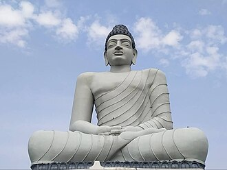

Andhra Pradesh is a state on the east coast of southern India. It is the seventh-largest state and the tenth-most
populous in the country. Telugu, one of the classical languages of India, is the most widely spoken language in the
state, as well as its official language. Amaravati is the state capital, while the largest city is Visakhapatnam.
Andhra Pradesh shares borders with Odisha to the northeast, Chhattisgarh to the north, Karnataka to the southwest,
Tamil Nadu to the south, Telangana to northwest and the Bay of Bengal to the east. It has the third-longest
coastline in India at about 1,053 kilometres (654 mi).
